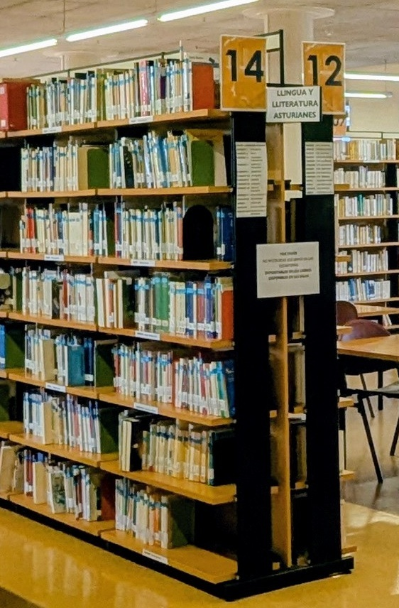

Biblioteca de Humanidades
Lenguaje, Lingüística, Literatura.
8

MATERIA
🧠
Generalidades sobre el lenguaje. Origen y evolución del lenguaje
🗣️
Lingüística y filología en general
💬
Lengua
Inglesa
💬
Lenguas germánicas
💬
Lenguas romances
💬
Lengua italiana
💬
Lenguas ibéricas
💬
Lenguas clásicas en general
💬
Lenguas eslavas y bálticas
💬
Lenguas orientales, africanas y otras lenguas
📖
Literatura
inglesa.
📖
Literatura alemana y austriaca
📖
Literatura holandesa, noruega y danesa
📖
Literatura francesa
📖
Literatura italiana
📖
Literatura rumana
📖
Literatura española
📖
Literaturas clásicas
📖
Literatura polaca, búlgara, checa, serbia
📖
Otras literaturas
⬅ Volver al inicio